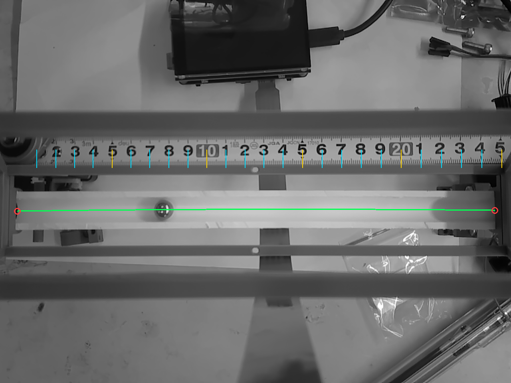

Team captain · Shanghai first prize · 2026
TI Cup Ball-Balancing Vehicle
A mobile system that follows a track while measuring and controlling a steel ball inside a vehicle-mounted balancing mechanism.
My responsibility: team leadership, CanMV K230 vision, geometric calibration, vision-to-controller communication, mechanical design, and integration of the beam, hinge, camera, and screw-driven actuator.

- Team captain
- Vision and mechanical integration lead
- 88.9 FPS
- Real-time ball tracking
- ≈ 1 mm
- Static coordinate error after calibration
- First Prize
- 2026 TI Cup Shanghai competition
Vision measurement
The K230 performs real-time grayscale ball detection and geometric calibration, converting camera observations into physical position for closed-loop control.
- Reached 88.9 FPS on the assembled mechanism with approximately 1 mm static coordinate error after calibration.
- Separated control measurement from wireless video transmission to preserve real-time response.
- Implemented robust ball localization and physical-coordinate output across the required beam motion.
Mechanical and controller integration
I designed and integrated the calibrated camera, beam, hinge, screw-driven actuator, and vehicle structure, then connected the vision subsystem to the STM32F407 controller.
- Defined the interface between K230 measurement and STM32F407 closed-loop control.
- Coordinated camera placement and actuator geometry to preserve visibility across the required beam motion.
- Led the team-level integration of vision, control, mechanical actuation, vehicle motion, and video transmission.
The complete team system combined vehicle motion, ball-balancing control, real-time vision, and wireless video. The responsibilities above identify my personal work.
Competition result
Our team received First Prize in the 2026 TI Cup Shanghai Undergraduate Electronic Design Competition for H Problem, Vehicle-Mounted Balance-Ball Motion Control System.